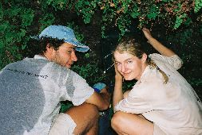
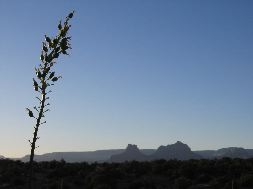

On Horseshoe Mesa
Down to Page Spring
In old miner's area
Collecting water from Page Spring
Steep climb back
Visiting a mine
Back to the Mesa
Rising early
|
|
On Horseshoe Mesa |
|
|
|
|
Down to Page Spring |
|
In old miner's area |

Collecting water from Page Spring |
Steep climb back |
|
|
Visiting a mine |
|
|
Back to the Mesa |
|

|
|
|
|
|
|
Rising early |
|
Around 10am we had made it to the top of beautiful Horseshoe Mesa after an exhausting but short climb through winding paths along the walls of the plateau. We spent a little while visiting the sites and we continued eastward towards Hance Creek.
Once we reached the trailhead that descended into Hance, we saw the difficulty of this approach. The path is very narrow and crumbly with rocks and sand. We tried to keep an eye on possible traces of water to locate Page spring. After descending maybe 50m, we reached a small cave in the wall. Climbing down the path with our backpacks proved a very hard task and we reevaluated the situation.
We decided to leave our backpacks there, go down to Page spring to gather water for two days and come back up the Mesa and rest there for the night. This would also allow us to hike out on the next day from a higher altitude instead doing it from the Tonto trail level. We were pretty tired at this point so we were keen on avoiding too adventurous descents.
Even without backpacks, the trail down to Page spring was very hard but once we reached the fresh water pool hidden behind massive rocks, we thought it had been a worthy walk. We enjoyed the pool and reloaded all our water deposits, and then we hiked back up to the point where we had left our backpacks.
On the walls, there are a number of tunnels made by the miners who once worked in this area. At every tunnel entrance, there is a very cozy draft of cool air, so we chose one of these spots to camp for lunch and for a long and needed nap. Afterwards we ventured into the tunnel to explore the mine.
That evening, we went back to the Mesa where we camped for the night, not before exploring the eastern, western and southern tips of the Mesa.
<--Previous day | Next day--> * Index